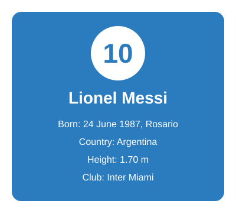
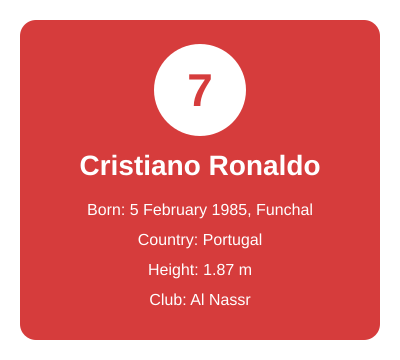

Two Players, One Era
For almost twenty years, Lionel Messi and Cristiano Ronaldo have dominated world football. They broke record after record and pushed each other to stay at the top. This site compares them in two periods: from the start of their careers to 2019, and from 2020 to today.


Lionel Messi
Messi was born in Rosario, Argentina, and grew up in Barcelona's youth academy. He played 17 years for Barcelona, then moved to Paris Saint-Germain in 2021 and to Inter Miami in 2023. He is a creative forward who dribbles, scores and sets up teammates.
- 8 Ballon d'Or awards (a record)
- Barcelona's all-time top scorer with 672 goals
- 2022 World Cup winner with Argentina

Cristiano Ronaldo
Ronaldo was born in Funchal on the Portuguese island of Madeira. He has played for Sporting CP, Manchester United, Real Madrid, Juventus and Al Nassr. He is known for his power, his heading and his huge work ethic.
- 5 Ballon d'Or awards and 5 Champions League titles
- Real Madrid's all-time top scorer with 450 goals
- Top scorer in men's international football (146 goals for Portugal)